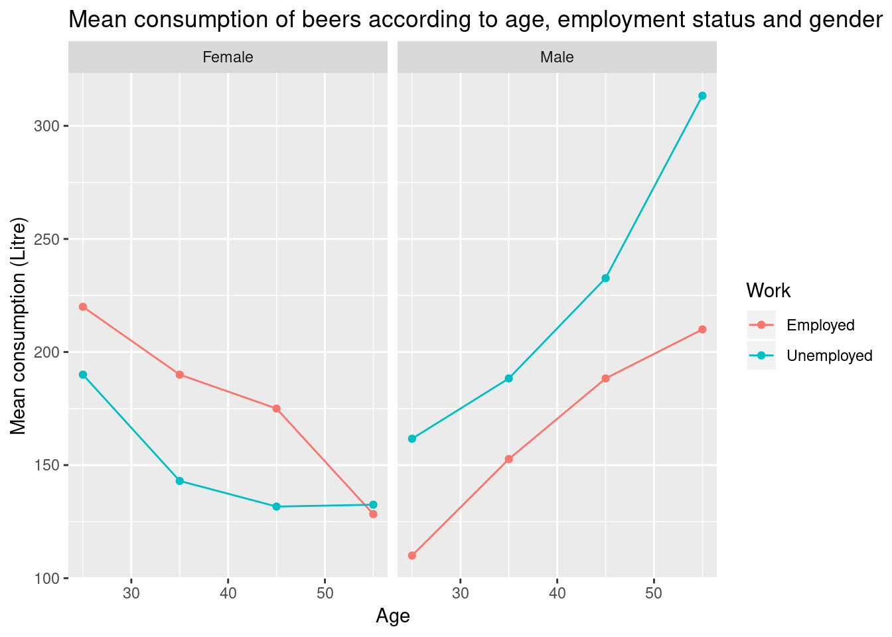

Chapter 4 Manipulating and analyzing data with dplyr
Learning Objectives
Describe the purpose of the
dplyrandtidyrpackages.Select certain columns in a data frame with the
dplyrfunctionselect.Select certain rows in a data frame according to filtering conditions with the
dplyrfunctionfilter.Link the output of one
dplyrfunction to the input of another function with the ‘pipe’ operator%>%.Add new columns to a data frame that are functions of existing columns with
mutate.Use the split-apply-combine concept for data analysis.
Use
summarize,group_by, andcountto split a data frame into groups of observations, apply summary statistics for each group, and then combine the results.Describe the concept of a wide and a long table format and for which purpose those formats are useful.
Describe what key-value pairs are.
Reshape a data frame from long to wide format and back with the
spreadandgathercommands from thetidyrpackage.
4.1 Data Manipulation using dplyr and tidyr
Bracket subsetting is handy, but it can be cumbersome and difficult to read, especially for complicated operations. Enter dplyr. dplyr is a package for making tabular data manipulation easier. It pairs nicely with tidyr which enables you to swiftly convert between different data formats for plotting and analysis.
Packages in R are basically sets of additional functions that let you do more stuff. The functions we’ve been using so far, like str() or data.frame(), come built into R; packages give you access to more of them. Before you use a package for the first time you need to install it on your machine, and then you should import it in every subsequent R session when you need it. You should already have installed the tidyverse package. This is an “umbrella-package” that installs several packages useful for data analysis which work together well such as tidyr, dplyr, ggplot2, tibble, etc.
The tidyverse package tries to address 3 common issues that arise when doing data analysis with some of functions that come with R:
- The results from a base R function sometimes depend on the type of data.
- Using R expressions in a non standard way, which can be confusing for new learners.
- Hidden arguments, having default operations that new learners are not aware of.
We have seen in our previous lesson that when building or importing a data frame, the columns that contain characters (i.e., text) are coerced (=converted) into the factor data type. We had to set stringsAsFactors to FALSE to avoid this hidden argument to convert our data type.
This time will use the tidyverse package to read the data and avoid having to set stringsAsFactors to FALSE
To load the package type:
## load the tidyverse packages, incl. dplyr
library("tidyverse")The Data Transformation Cheat Sheet provides an overview of the dplyr grammar, offering more details and functions that we will see in this chapter.
4.2 What are dplyr and tidyr?
The package dplyr provides easy tools for the most common data manipulation tasks. It is built to work directly with data frames, with many common tasks optimized by being written in a compiled language (C++). An additional feature is the ability to work directly with data stored in an external database. The benefits of doing this are that the data can be managed natively in a relational database, queries can be conducted on that database, and only the results of the query are returned.
This addresses a common problem with R in that all operations are conducted in-memory and thus the amount of data you can work with is limited by available memory. The database connections essentially remove that limitation in that you can connect to a database of many hundreds of GB, conduct queries on it directly, and pull back into R only what you need for analysis.
The package tidyr addresses the common problem of wanting to reshape your data for plotting and use by different R functions. Sometimes we want data sets where we have one row per measurement. Sometimes we want a data frame where each measurement type has its own column, and rows are instead more aggregated groups - like plots or aquaria. Moving back and forth between these formats is nontrivial, and tidyr gives you tools for this and more sophisticated data manipulation.
To learn more about dplyr and tidyr after the workshop, you may want to check out this handy data transformation with dplyr cheatsheet and this one about tidyr.
We’ll read in our data using the read_csv() function, from the tidyverse package readr, instead of read.csv().
surveys <- read_csv("data/portal_data_joined.csv")## Parsed with column specification:
## cols(
## record_id = col_double(),
## month = col_double(),
## day = col_double(),
## year = col_double(),
## plot_id = col_double(),
## species_id = col_character(),
## sex = col_character(),
## hindfoot_length = col_double(),
## weight = col_double(),
## genus = col_character(),
## species = col_character(),
## taxa = col_character(),
## plot_type = col_character()
## )## inspect the data
str(surveys)
## preview the data
# View(surveys)Notice that the class of the data is now tbl_df
This is referred to as a “tibble”. Tibbles tweak some of the behaviors of the data frame objects we introduced in the previous episode. The data structure is very similar to a data frame. For our purposes the only differences are that:
- In addition to displaying the data type of each column under its name, it only prints the first few rows of data and only as many columns as fit on one screen.
- Columns of class
characterare never converted into factors.
We’re going to learn some of the most common dplyr functions:
select(): subset columnsfilter(): subset rows on conditionsmutate(): create new columns by using information from other columnsgroup_by()andsummarize(): create summary statisitcs on grouped dataarrange(): sort resultscount(): count discrete values
4.3 Selecting columns and filtering rows
To select columns of a data frame, use select(). The first argument to this function is the data frame (surveys), and the subsequent arguments are the columns to keep.
select(surveys, plot_id, species_id, weight)To select all columns except certain ones, put a “-” in front of the variable to exclude it.
select(surveys, -record_id, -species_id)This will select all the variables in surveys except record_id and species_id.
To choose rows based on a specific criteria, use filter():
filter(surveys, year == 1995)## # A tibble: 1,180 x 13
## record_id month day year plot_id species_id sex hindfoot_length
## <dbl> <dbl> <dbl> <dbl> <dbl> <chr> <chr> <dbl>
## 1 22314 6 7 1995 2 NL M 34
## 2 22728 9 23 1995 2 NL F 32
## 3 22899 10 28 1995 2 NL F 32
## 4 23032 12 2 1995 2 NL F 33
## 5 22003 1 11 1995 2 DM M 37
## 6 22042 2 4 1995 2 DM F 36
## 7 22044 2 4 1995 2 DM M 37
## 8 22105 3 4 1995 2 DM F 37
## 9 22109 3 4 1995 2 DM M 37
## 10 22168 4 1 1995 2 DM M 36
## # … with 1,170 more rows, and 5 more variables: weight <dbl>, genus <chr>,
## # species <chr>, taxa <chr>, plot_type <chr>4.4 Pipes
What if you want to select and filter at the same time? There are three ways to do this: use intermediate steps, nested functions, or pipes.
With intermediate steps, you create a temporary data frame and use that as input to the next function, like this:
surveys2 <- filter(surveys, weight < 5)
surveys_sml <- select(surveys2, species_id, sex, weight)This is readable, but can clutter up your workspace with lots of objects that you have to name individually. With multiple steps, that can be hard to keep track of.
You can also nest functions (i.e. one function inside of another), like this:
surveys_sml <- select(filter(surveys, weight < 5), species_id, sex, weight)This is handy, but can be difficult to read if too many functions are nested, as R evaluates the expression from the inside out (in this case, filtering, then selecting).
The last option, pipes, are a recent addition to R. Pipes let you take the output of one function and send it directly to the next, which is useful when you need to do many things to the same dataset. Pipes in R look like %>% and are made available via the magrittr package, installed automatically with dplyr. If you use RStudio, you can type the pipe with Ctrl + Shift + M if you have a PC or Cmd + Shift + M if you have a Mac.
surveys %>%
filter(weight < 5) %>%
select(species_id, sex, weight)## # A tibble: 17 x 3
## species_id sex weight
## <chr> <chr> <dbl>
## 1 PF F 4
## 2 PF F 4
## 3 PF M 4
## 4 RM F 4
## 5 RM M 4
## 6 PF <NA> 4
## 7 PP M 4
## 8 RM M 4
## 9 RM M 4
## 10 RM M 4
## 11 PF M 4
## 12 PF F 4
## 13 RM M 4
## 14 RM M 4
## 15 RM F 4
## 16 RM M 4
## 17 RM M 4In the above code, we use the pipe to send the surveys dataset first through filter() to keep rows where weight is less than 5, then through select() to keep only the species_id, sex, and weight columns. Since %>% takes the object on its left and passes it as the first argument to the function on its right, we don’t need to explicitly include the data frame as an argument to the filter() and select() functions any more.
Some may find it helpful to read the pipe like the word “then”. For instance, in the above example, we took the data frame surveys, then we filtered for rows with weight < 5, then we selected columns species_id, sex, and weight. The dplyr functions by themselves are somewhat simple, but by combining them into linear workflows with the pipe, we can accomplish more complex manipulations of data frames.
If we want to create a new object with this smaller version of the data, we can assign it a new name:
surveys_sml <- surveys %>%
filter(weight < 5) %>%
select(species_id, sex, weight)
surveys_sml## # A tibble: 17 x 3
## species_id sex weight
## <chr> <chr> <dbl>
## 1 PF F 4
## 2 PF F 4
## 3 PF M 4
## 4 RM F 4
## 5 RM M 4
## 6 PF <NA> 4
## 7 PP M 4
## 8 RM M 4
## 9 RM M 4
## 10 RM M 4
## 11 PF M 4
## 12 PF F 4
## 13 RM M 4
## 14 RM M 4
## 15 RM F 4
## 16 RM M 4
## 17 RM M 4Note that the final data frame is the leftmost part of this expression.
► Question
Using pipes, subset the surveys data to include animals collected before 1995 and retain only the columns year, sex, and weight.
► Solution
4.5 Mutate
Frequently you’ll want to create new columns based on the values in existing columns, for example to do unit conversions, or to find the ratio of values in two columns. For this we’ll use mutate().
To create a new column of weight in kg:
surveys %>%
mutate(weight_kg = weight / 1000)## # A tibble: 34,786 x 14
## record_id month day year plot_id species_id sex hindfoot_length
## <dbl> <dbl> <dbl> <dbl> <dbl> <chr> <chr> <dbl>
## 1 1 7 16 1977 2 NL M 32
## 2 72 8 19 1977 2 NL M 31
## 3 224 9 13 1977 2 NL <NA> NA
## 4 266 10 16 1977 2 NL <NA> NA
## 5 349 11 12 1977 2 NL <NA> NA
## 6 363 11 12 1977 2 NL <NA> NA
## 7 435 12 10 1977 2 NL <NA> NA
## 8 506 1 8 1978 2 NL <NA> NA
## 9 588 2 18 1978 2 NL M NA
## 10 661 3 11 1978 2 NL <NA> NA
## # … with 34,776 more rows, and 6 more variables: weight <dbl>,
## # genus <chr>, species <chr>, taxa <chr>, plot_type <chr>,
## # weight_kg <dbl>You can also create a second new column based on the first new column within the same call of mutate():
surveys %>%
mutate(weight_kg = weight / 1000,
weight_kg2 = weight_kg * 2)## # A tibble: 34,786 x 15
## record_id month day year plot_id species_id sex hindfoot_length
## <dbl> <dbl> <dbl> <dbl> <dbl> <chr> <chr> <dbl>
## 1 1 7 16 1977 2 NL M 32
## 2 72 8 19 1977 2 NL M 31
## 3 224 9 13 1977 2 NL <NA> NA
## 4 266 10 16 1977 2 NL <NA> NA
## 5 349 11 12 1977 2 NL <NA> NA
## 6 363 11 12 1977 2 NL <NA> NA
## 7 435 12 10 1977 2 NL <NA> NA
## 8 506 1 8 1978 2 NL <NA> NA
## 9 588 2 18 1978 2 NL M NA
## 10 661 3 11 1978 2 NL <NA> NA
## # … with 34,776 more rows, and 7 more variables: weight <dbl>,
## # genus <chr>, species <chr>, taxa <chr>, plot_type <chr>,
## # weight_kg <dbl>, weight_kg2 <dbl>If this runs off your screen and you just want to see the first few rows, you can use a pipe to view the head() of the data. (Pipes work with non-dplyr functions, too, as long as the dplyr or magrittr package is loaded).
surveys %>%
mutate(weight_kg = weight / 1000) %>%
head()## # A tibble: 6 x 14
## record_id month day year plot_id species_id sex hindfoot_length
## <dbl> <dbl> <dbl> <dbl> <dbl> <chr> <chr> <dbl>
## 1 1 7 16 1977 2 NL M 32
## 2 72 8 19 1977 2 NL M 31
## 3 224 9 13 1977 2 NL <NA> NA
## 4 266 10 16 1977 2 NL <NA> NA
## 5 349 11 12 1977 2 NL <NA> NA
## 6 363 11 12 1977 2 NL <NA> NA
## # … with 6 more variables: weight <dbl>, genus <chr>, species <chr>,
## # taxa <chr>, plot_type <chr>, weight_kg <dbl>The first few rows of the output are full of NAs, so if we wanted to remove those we could insert a filter() in the chain:
surveys %>%
filter(!is.na(weight)) %>%
mutate(weight_kg = weight / 1000) %>%
head()## # A tibble: 6 x 14
## record_id month day year plot_id species_id sex hindfoot_length
## <dbl> <dbl> <dbl> <dbl> <dbl> <chr> <chr> <dbl>
## 1 588 2 18 1978 2 NL M NA
## 2 845 5 6 1978 2 NL M 32
## 3 990 6 9 1978 2 NL M NA
## 4 1164 8 5 1978 2 NL M 34
## 5 1261 9 4 1978 2 NL M 32
## 6 1453 11 5 1978 2 NL M NA
## # … with 6 more variables: weight <dbl>, genus <chr>, species <chr>,
## # taxa <chr>, plot_type <chr>, weight_kg <dbl>is.na() is a function that determines whether something is an NA. The ! symbol negates the result, so we’re asking for every row where weight is not an NA.
► Question
Create a new data frame from the surveys data that meets the following criteria: contains only the species_id column and a new column called hindfoot_half containing values that are half the hindfoot_length values. In this hindfoot_half column, there are no NAs and all values are less than 30.
Hint: think about how the commands should be ordered to produce this data frame!
► Solution
4.6 Split-apply-combine data analysis
Many data analysis tasks can be approached using the split-apply-combine paradigm: split the data into groups, apply some analysis to each group, and then combine the results. dplyr makes this very easy through the use of the group_by() function.
surveys %>%
group_by(sex)## # A tibble: 34,786 x 13
## # Groups: sex [3]
## record_id month day year plot_id species_id sex hindfoot_length
## <dbl> <dbl> <dbl> <dbl> <dbl> <chr> <chr> <dbl>
## 1 1 7 16 1977 2 NL M 32
## 2 72 8 19 1977 2 NL M 31
## 3 224 9 13 1977 2 NL <NA> NA
## 4 266 10 16 1977 2 NL <NA> NA
## 5 349 11 12 1977 2 NL <NA> NA
## 6 363 11 12 1977 2 NL <NA> NA
## 7 435 12 10 1977 2 NL <NA> NA
## 8 506 1 8 1978 2 NL <NA> NA
## 9 588 2 18 1978 2 NL M NA
## 10 661 3 11 1978 2 NL <NA> NA
## # … with 34,776 more rows, and 5 more variables: weight <dbl>,
## # genus <chr>, species <chr>, taxa <chr>, plot_type <chr>The group_by() function doesn’t perform any data processing, it groups the data into subsets: in the example above, our initial tibble of 34786 observations is split into 3 groups based on the sex variable.
Once the data have been combined, subsequent operations will be applied on each group independently.
4.6.1 The summarize() function
group_by() is often used together with summarize(), which collapses each group into a single-row summary of that group. group_by() takes as arguments the column names that contain the categorical variables for which you want to calculate the summary statistics. So to compute the mean weight by sex:
surveys %>%
group_by(sex) %>%
summarize(mean_weight = mean(weight, na.rm = TRUE))## # A tibble: 3 x 2
## sex mean_weight
## <chr> <dbl>
## 1 <NA> 64.7
## 2 F 42.2
## 3 M 43.0You may also have noticed that the output from these calls doesn’t run off the screen anymore. It’s one of the advantages of tbl_df over data frame.
You can also group by multiple columns:
surveys %>%
group_by(sex, species_id) %>%
summarize(mean_weight = mean(weight, na.rm = TRUE))## # A tibble: 92 x 3
## # Groups: sex [3]
## sex species_id mean_weight
## <chr> <chr> <dbl>
## 1 <NA> AB NaN
## 2 <NA> AH NaN
## 3 <NA> AS NaN
## 4 <NA> BA NaN
## 5 <NA> CB NaN
## 6 <NA> CM NaN
## 7 <NA> CQ NaN
## 8 <NA> CS NaN
## 9 <NA> CT NaN
## 10 <NA> CU NaN
## # … with 82 more rowsWhen grouping both by sex and species_id, the last few rows are for animals that escaped before their sex and body weights could be determined. You may notice that the last column does not contain NA but NaN (which refers to “Not a Number”). To avoid this, we can remove the missing values for weight before we attempt to calculate the summary statistics on weight. Because the missing values are removed first, we can omit na.rm = TRUE when computing the mean:
surveys %>%
filter(!is.na(weight)) %>%
group_by(sex, species_id) %>%
summarize(mean_weight = mean(weight))## # A tibble: 64 x 3
## # Groups: sex [3]
## sex species_id mean_weight
## <chr> <chr> <dbl>
## 1 <NA> DM 38.3
## 2 <NA> DO 50.7
## 3 <NA> DS 120
## 4 <NA> NL 168.
## 5 <NA> OL 29
## 6 <NA> OT 21.2
## 7 <NA> PB 30.6
## 8 <NA> PE 17.7
## 9 <NA> PF 6
## 10 <NA> PI 18
## # … with 54 more rowsHere, again, the output from these calls doesn’t run off the screen anymore. If you want to display more data, you can use the print() function at the end of your chain with the argument n specifying the number of rows to display:
surveys %>%
filter(!is.na(weight)) %>%
group_by(sex, species_id) %>%
summarize(mean_weight = mean(weight)) %>%
print(n = 15)## # A tibble: 64 x 3
## # Groups: sex [3]
## sex species_id mean_weight
## <chr> <chr> <dbl>
## 1 <NA> DM 38.3
## 2 <NA> DO 50.7
## 3 <NA> DS 120
## 4 <NA> NL 168.
## 5 <NA> OL 29
## 6 <NA> OT 21.2
## 7 <NA> PB 30.6
## 8 <NA> PE 17.7
## 9 <NA> PF 6
## 10 <NA> PI 18
## 11 <NA> PL 25
## 12 <NA> PM 20.2
## 13 <NA> PP 14.6
## 14 <NA> RM 11.1
## 15 <NA> SF 40.5
## # … with 49 more rowsOnce the data are grouped, you can also summarize multiple variables at the same time (and not necessarily on the same variable). For instance, we could add a column indicating the minimum weight for each species for each sex:
surveys %>%
filter(!is.na(weight)) %>%
group_by(sex, species_id) %>%
summarize(mean_weight = mean(weight),
min_weight = min(weight))## # A tibble: 64 x 4
## # Groups: sex [3]
## sex species_id mean_weight min_weight
## <chr> <chr> <dbl> <dbl>
## 1 <NA> DM 38.3 24
## 2 <NA> DO 50.7 44
## 3 <NA> DS 120 78
## 4 <NA> NL 168. 83
## 5 <NA> OL 29 21
## 6 <NA> OT 21.2 18
## 7 <NA> PB 30.6 20
## 8 <NA> PE 17.7 17
## 9 <NA> PF 6 4
## 10 <NA> PI 18 18
## # … with 54 more rowsIt is sometimes useful to rearrange the result of a query to inspect the values. For instance, we can sort on min_weight to put the lighter species first:
surveys %>%
filter(!is.na(weight)) %>%
group_by(sex, species_id) %>%
summarize(mean_weight = mean(weight),
min_weight = min(weight)) %>%
arrange(min_weight)## # A tibble: 64 x 4
## # Groups: sex [3]
## sex species_id mean_weight min_weight
## <chr> <chr> <dbl> <dbl>
## 1 <NA> PF 6 4
## 2 F PF 7.97 4
## 3 F RM 11.1 4
## 4 M PF 7.89 4
## 5 M PP 17.2 4
## 6 M RM 10.1 4
## 7 F OT 24.8 5
## 8 F PP 17.2 5
## 9 F BA 9.16 6
## 10 M BA 7.36 6
## # … with 54 more rowsTo sort in descending order, we need to add the desc() function. If we want to sort the results by decreasing order of mean weight:
surveys %>%
filter(!is.na(weight)) %>%
group_by(sex, species_id) %>%
summarize(mean_weight = mean(weight),
min_weight = min(weight)) %>%
arrange(desc(mean_weight))## # A tibble: 64 x 4
## # Groups: sex [3]
## sex species_id mean_weight min_weight
## <chr> <chr> <dbl> <dbl>
## 1 <NA> NL 168. 83
## 2 M NL 166. 30
## 3 F NL 154. 32
## 4 <NA> SH 130 130
## 5 M SS 130 130
## 6 M DS 122. 12
## 7 <NA> DS 120 78
## 8 F DS 118. 45
## 9 F SH 78.8 30
## 10 F SF 69 46
## # … with 54 more rows4.6.2 Counting
When working with data, we often want to know the number of observations found for each factor or combination of factors. For this task, dplyr provides count(). For example, if we wanted to count the number of rows of data for each sex, we would do:
surveys %>%
count(sex)## # A tibble: 3 x 2
## sex n
## <chr> <int>
## 1 <NA> 1748
## 2 F 15690
## 3 M 17348The count() function is shorthand for something we’ve already seen: grouping by a variable, and summarizing it by counting the number of observations in that group. In other words, surveys %>% count() is equivalent to:
surveys %>%
group_by(sex) %>%
summarise(count = n())## # A tibble: 3 x 2
## sex count
## <chr> <int>
## 1 <NA> 1748
## 2 F 15690
## 3 M 17348For convenience, count() provides the sort argument:
surveys %>%
count(sex, sort = TRUE)## # A tibble: 3 x 2
## sex n
## <chr> <int>
## 1 M 17348
## 2 F 15690
## 3 <NA> 1748Previous example shows the use of count() to count the number of rows/observations for one factor (i.e., sex). If we wanted to count combination of factors, such as sex and species, we would specify the first and the second factor as the arguments of count():
surveys %>%
count(sex, species)## # A tibble: 81 x 3
## sex species n
## <chr> <chr> <int>
## 1 <NA> albigula 75
## 2 <NA> audubonii 75
## 3 <NA> baileyi 29
## 4 <NA> bilineata 303
## 5 <NA> brunneicapillus 50
## 6 <NA> chlorurus 39
## 7 <NA> clarki 1
## 8 <NA> eremicus 22
## 9 <NA> flavus 24
## 10 <NA> fulviventer 3
## # … with 71 more rowsWith the above code, we can proceed with arrange() to sort the table according to a number of criteria so that we have a better comparison. For instance, we might want to arrange the table above in (i) an alphabetical order of the levels of the species and (ii) in descending order of the count:
surveys %>%
count(sex, species) %>%
arrange(species, desc(n))## # A tibble: 81 x 3
## sex species n
## <chr> <chr> <int>
## 1 F albigula 675
## 2 M albigula 502
## 3 <NA> albigula 75
## 4 <NA> audubonii 75
## 5 F baileyi 1646
## 6 M baileyi 1216
## 7 <NA> baileyi 29
## 8 <NA> bilineata 303
## 9 <NA> brunneicapillus 50
## 10 <NA> chlorurus 39
## # … with 71 more rowsFrom the table above, we may learn that, for instance, there are 75 observations of the albigula species that are not specified for its sex (i.e. NA).
► Question
How many animals were caught in each
plot_typesurveyed?Use
group_by()andsummarize()to find the mean, min, and max hindfoot length for each species (usingspecies_id). Also add the number of observations (hint: see?n).What was the heaviest animal measured in each year? Return the columns
year,genus,species_id, andweight.
► Solution
4.7 Reshaping with gather and spread
In the spreadsheet lesson (chapter 1), we discussed how to structure our data leading to the four rules defining a tidy dataset:
- Each variable has its own column
- Each observation has its own row
- Each value must have its own cell
- Each type of observational unit forms a table
Here we examine the fourth rule:
Each type of observational unit forms a table.
In surveys , the rows of surveys contain the values of variables associated with each record (the unit), values such the weight or sex of each animal associated with each record. What if instead of comparing records, we wanted to compare the different mean weight of each species between plots? (Ignoring plot_type for simplicity).
We’d need to create a new table where each row (the unit) is comprise of values of variables associated with each plot. In practical terms this means the values of the species in genus would become the names of column variables and the cells would contain the values of the mean weight observed on each plot.
Having created a new table, it is therefore straightforward to explore the relationship between the weight of different species within, and between, the plots. The key point here is that we are still following a tidy data structure, but we have reshaped the data according to the observations of interest: average species weight per plot instead of recordings per date.
The opposite transformation would be to transform column names into values of a variable.
We can do both these of transformations with two tidyr functions, spread() and gather().
4.7.1 Spreading
spread() takes three principal arguments:
- the data
- the key column variable whose values will become new column names.
- the value column variable whose values will fill the new column variables.
Further arguments include fill which, if set, fills in missing values with the value provided.
Let’s use spread() to transform surveys to find the mean weight of each species in each plot over the entire survey period. We use filter(), group_by() and summarise() to filter our observations and variables of interest, and create a new variable for the mean_weight. We use the pipe as before too.
surveys_gw <- surveys %>%
filter(!is.na(weight)) %>%
group_by(genus, plot_id) %>%
summarize(mean_weight = mean(weight))
str(surveys_gw)## Classes 'grouped_df', 'tbl_df', 'tbl' and 'data.frame': 196 obs. of 3 variables:
## $ genus : chr "Baiomys" "Baiomys" "Baiomys" "Baiomys" ...
## $ plot_id : num 1 2 3 5 18 19 20 21 1 2 ...
## $ mean_weight: num 7 6 8.61 7.75 9.5 ...
## - attr(*, "spec")=
## .. cols(
## .. record_id = col_double(),
## .. month = col_double(),
## .. day = col_double(),
## .. year = col_double(),
## .. plot_id = col_double(),
## .. species_id = col_character(),
## .. sex = col_character(),
## .. hindfoot_length = col_double(),
## .. weight = col_double(),
## .. genus = col_character(),
## .. species = col_character(),
## .. taxa = col_character(),
## .. plot_type = col_character()
## .. )
## - attr(*, "groups")=Classes 'tbl_df', 'tbl' and 'data.frame': 10 obs. of 2 variables:
## ..$ genus: chr "Baiomys" "Chaetodipus" "Dipodomys" "Neotoma" ...
## ..$ .rows:List of 10
## .. ..$ : int 1 2 3 4 5 6 7 8
## .. ..$ : int 9 10 11 12 13 14 15 16 17 18 ...
## .. ..$ : int 33 34 35 36 37 38 39 40 41 42 ...
## .. ..$ : int 57 58 59 60 61 62 63 64 65 66 ...
## .. ..$ : int 81 82 83 84 85 86 87 88 89 90 ...
## .. ..$ : int 105 106 107 108 109 110 111 112 113 114 ...
## .. ..$ : int 128 129 130 131 132 133 134 135 136 137 ...
## .. ..$ : int 152 153 154 155 156 157 158 159 160 161 ...
## .. ..$ : int 176 177 178 179 180 181 182 183 184 185 ...
## .. ..$ : int 195 196
## ..- attr(*, ".drop")= logi TRUEThis yields surveys_gw where the observations for each plot are spread across multiple rows, 196 observations of 3 variables. Using spread() to key on genus with values from mean_weight this becomes 24 observations of 11 variables, one row for each plot. We again use pipes:
surveys_spread <- surveys_gw %>%
spread(key = genus, value = mean_weight)
str(surveys_spread)## Classes 'tbl_df', 'tbl' and 'data.frame': 24 obs. of 11 variables:
## $ plot_id : num 1 2 3 4 5 6 7 8 9 10 ...
## $ Baiomys : num 7 6 8.61 NA 7.75 ...
## $ Chaetodipus : num 22.2 25.1 24.6 23 18 ...
## $ Dipodomys : num 60.2 55.7 52 57.5 51.1 ...
## $ Neotoma : num 156 169 158 164 190 ...
## $ Onychomys : num 27.7 26.9 26 28.1 27 ...
## $ Perognathus : num 9.62 6.95 7.51 7.82 8.66 ...
## $ Peromyscus : num 22.2 22.3 21.4 22.6 21.2 ...
## $ Reithrodontomys: num 11.4 10.7 10.5 10.3 11.2 ...
## $ Sigmodon : num NA 70.9 65.6 82 82.7 ...
## $ Spermophilus : num NA NA NA NA NA NA NA NA NA NA ...
We could now plot comparisons between the weight of species in different plots, although we may wish to fill in the missing values first.
surveys_gw %>%
spread(genus, mean_weight, fill = 0) %>%
head()## # A tibble: 6 x 11
## plot_id Baiomys Chaetodipus Dipodomys Neotoma Onychomys Perognathus
## <dbl> <dbl> <dbl> <dbl> <dbl> <dbl> <dbl>
## 1 1 7 22.2 60.2 156. 27.7 9.62
## 2 2 6 25.1 55.7 169. 26.9 6.95
## 3 3 8.61 24.6 52.0 158. 26.0 7.51
## 4 4 0 23.0 57.5 164. 28.1 7.82
## 5 5 7.75 18.0 51.1 190. 27.0 8.66
## 6 6 0 24.9 58.6 180. 25.9 7.81
## # … with 4 more variables: Peromyscus <dbl>, Reithrodontomys <dbl>,
## # Sigmodon <dbl>, Spermophilus <dbl>4.7.2 Gathering
The opposing situation could occur if we had been provided with data in the form of surveys_spread, where the genus names are column names, but we wish to treat them as values of a genus variable instead.
In this situation we are gathering the column names and turning them into a pair of new variables. One variable represents the column names as values, and the other variable contains the values previously associated with the column names.
gather() takes four principal arguments:
- the data
- the key column variable we wish to create from column names.
- the values column variable we wish to create and fill with values associated with the key.
- the names of the columns we use to fill the key variable (or to drop).
To recreate surveys_gw from surveys_spread we would create a key called genus and value called mean_weight and use all columns except plot_id for the key variable. Here we drop plot_id column with a minus sign.
surveys_gather <- surveys_spread %>%
gather(key = genus, value = mean_weight, -plot_id)
str(surveys_gather)## Classes 'tbl_df', 'tbl' and 'data.frame': 240 obs. of 3 variables:
## $ plot_id : num 1 2 3 4 5 6 7 8 9 10 ...
## $ genus : chr "Baiomys" "Baiomys" "Baiomys" "Baiomys" ...
## $ mean_weight: num 7 6 8.61 NA 7.75 ...
Note that now the NA genera are included in the re-gathered format. Spreading and then gathering can be a useful way to balance out a dataset so every replicate has the same composition.
We could also have used a specification for what columns to include. This can be useful if you have a large number of identifying columns, and it’s easier to specify what to gather than what to leave alone. And if the columns are in a row, we don’t even need to list them all out - just use the : operator!
surveys_spread %>%
gather(key = genus, value = mean_weight, Baiomys:Spermophilus) %>%
head()## # A tibble: 6 x 3
## plot_id genus mean_weight
## <dbl> <chr> <dbl>
## 1 1 Baiomys 7
## 2 2 Baiomys 6
## 3 3 Baiomys 8.61
## 4 4 Baiomys NA
## 5 5 Baiomys 7.75
## 6 6 Baiomys NA► Question
Spread the surveys data frame with year as columns, plot_id as rows, and the number of genera per plot as the values. You will need to summarize before reshaping, and use the function n_distinct() to get the number of unique genera within a particular chunk of data. It’s a powerful function! See ?n_distinct for more.
► Solution
► Question
Now take that data frame and gather() it again, so each row is a unique plot_id by year combination.
► Solution
► Question
The surveys data set has two measurement columns: hindfoot_length and weight. This makes it difficult to do things like look at the relationship between mean values of each measurement per year in different plot types. Let’s walk through a common solution for this type of problem. First, use gather() to create a dataset where we have a key column called measurement and a value column that takes on the value of either hindfoot_length or weight.
Hint: You’ll need to specify which columns are being gathered.
► Solution
► Question
With this new data set, calculate the average of each measurement in each year for each different plot_type. Then spread() them into a data set with a column for hindfoot_length and weight.
Hint: You only need to specify the key and value columns for spread().
► Solution
4.8 Exporting data
Now that you have learned how to use dplyr to extract information from or summarize your raw data, you may want to export these new data sets to share them with your collaborators or for archival.
Similar to the read_csv() function used for reading CSV files into R, there is a write_csv() function that generates CSV files from data frames.
Before using write_csv(), we are going to create a new folder, data_output, in our working directory that will store this generated dataset. We don’t want to write generated datasets in the same directory as our raw data. It’s good practice to keep them separate. The data folder should only contain the raw, unaltered data, and should be left alone to make sure we don’t delete or modify it. In contrast, our script will generate the contents of the data_output directory, so even if the files it contains are deleted, we can always re-generate them.
In preparation for our next lesson on plotting, we are going to prepare a cleaned up version of the data set that doesn’t include any missing data.
Let’s start by removing observations of animals for which weight and hindfoot_length are missing, or the sex has not been determined:
surveys_complete <- surveys %>%
filter(!is.na(weight), ## remove missing weight
!is.na(hindfoot_length), ## remove missing hindfoot_length
!is.na(sex)) ## remove missing sexBecause we are interested in plotting how species abundances have changed through time, we are also going to remove observations for rare species (i.e., that have been observed less than 50 times). We will do this in two steps: first we are going to create a data set that counts how often each species has been observed, and filter out the rare species; then, we will extract only the observations for these more common species:
## Extract the most common species_id
species_counts <- surveys_complete %>%
count(species_id) %>%
filter(n >= 50)
## Only keep the most common species
surveys_complete <- surveys_complete %>%
filter(species_id %in% species_counts$species_id)To make sure that everyone has the same data set, check that surveys_complete has 30463 rows and 13 columns by typing dim(surveys_complete).
Now that our data set is ready, we can save it as a CSV file in our data_output folder.
write_csv(surveys_complete, path = "data_output/surveys_complete.csv")4.9 Additional exercises
► Question
We are going to re-analyse beer consumption in 48 individuals using dplyr. The data are available in the rWSBIM1207 package. The data illustrated the fictive beer consumption in litres per year at different age according to gender and employment.
Load the
rWSBIM1207package. If the package isn’t installed of its version is older than 0.1.1, install it from theUCLouvain-CBIO/rWSBIM1207' GitHub repository using thedevtools::install_github` function.Directly load the data by typing
data(beers)Remove observations with missing values.
Using the
Year,MonthandYearcolumns, create a new columnDateusingdplyr::mutateandlubridate::ymd. What is the class ofDate?Create a new table, containing observations for women older than 35 years old, employed, and select all columns except Day, Month and Year, and order in descending value of consumption of beers.
Export the new table to a
csvfile.
Beer consumption analysis:
- Does employment status have an impact on beer consumption?
- Do men drink more than women?
- Does employment status have an influence on beer consumption according to gender?
- Do men drink more than women according to age and employment status?
As we can see from the last exercise, it become difficult to read and interpret multiple results. In the next chapter, we will see how to complement such analysis questions with visualisations such as the following one, that clearly highlight important patterns in our data.
Figure 4.1: Visualisation of beer consumption, highlighting different patterns of beer consumption in employed and unemployed males and females.
► Question
The Cancer Genome Atlas (TCGA) is a large scale effort that has collected high throughput biology data from hundreds of patients samples. In this exercise, we are going to analyse the clinical variables recorded for a subset of the patients.
Load the
rWSBIM1207package. If the package isn’t installed of its version is older than 0.1.1, install it from theUCLouvain-CBIO/rWSBIM1207' GitHub repository using thedevtools::install_github` function.Using the
clinical1.csv()function fromrWSBIM1207, find the path theclinical1.csvfile and read it to produce adata.framenamedclinical.Familiarise yourself with the data.
Create a smaller data frame called
clinical_minicontaining only the columns corresponding topatientID,gender,age_at_diagnosis,smoking_history,number_pack_years_smoked,year_of_tobacco_smoking_onset, andstopped_smoking_year.Calculate the number of males and females in the cohort.
Create a new variable
years_at_diagnosiscorresponding to the age at diagnosis converted from days into years.Calculate the mean and median age at diagnosis (in years). Pay attention to missing values!
Calculate the mean and median age at diagnosis for males and females.
How many patient were diagnosed before 50 years?
Compare the mean age at diagnosis between current smoker and lifelong non-smoker.
Select patients who stopped smoking more than 15 years ago and calculate the number of smoking years for these cases. Display only cases for which you were able to calculate the data.
How many of them smoked less than 5 years?
Try to recreate the following table, reporting the number of smokers and lifelong-non smoker between males and females. Note: the layout can be different.
| gender | current smoker | lifelong non-smoker |
|---|---|---|
| female | 51 | 55 |
| male | 69 | 20 |
Page built: 2019-03-12